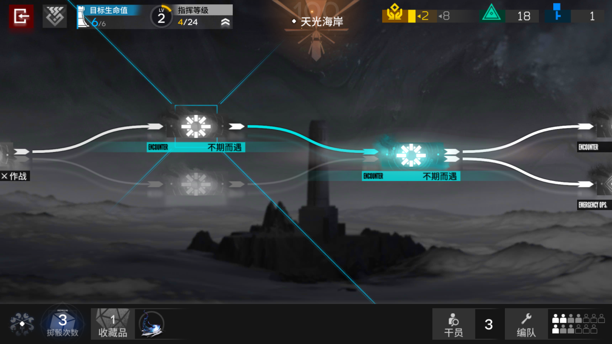
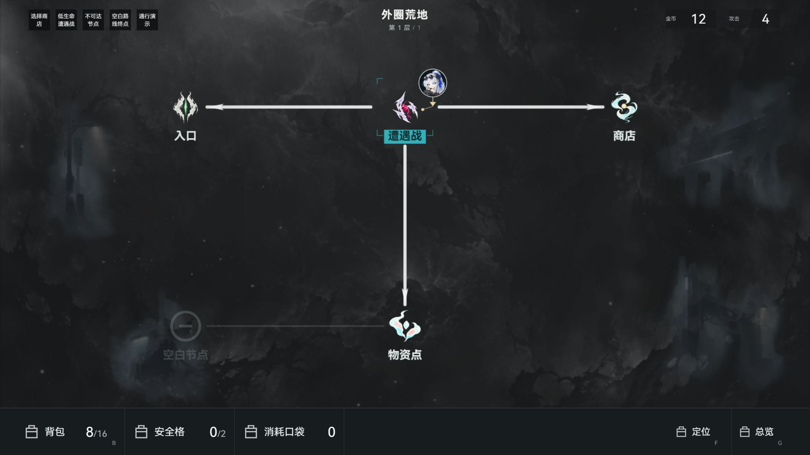
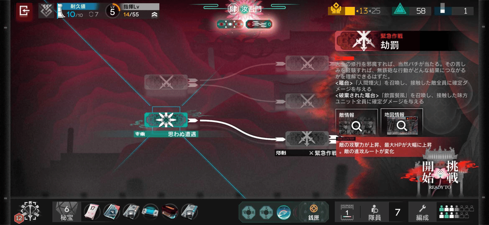
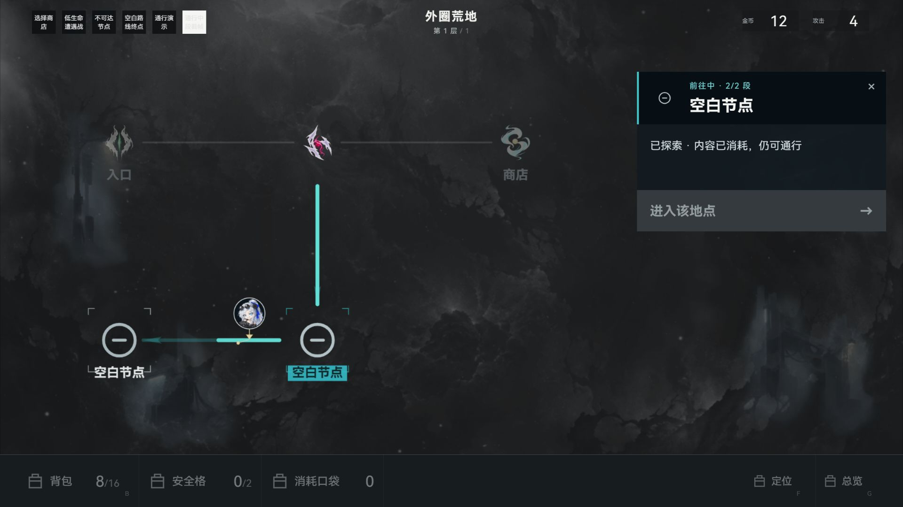

地图整改：真实参考与现行构造页
左侧保留方舟真实原图，右侧是本作现行源码在1920×1080 Codex内置浏览器的独立构造页截图。并排仅按等宽展示，未编辑参考图。构造页上方的小测试按钮、底栏图标替代物和五节点数据仅用于检查；不导入Game、不读写存档，不代表真实对局已完成验收。

真实IS3原图：小主体、开放承托、窄标签、白色可走线与青色当前路线；远端分支降权。
现行本作构造页：保留旧手绘图源，普通节点无实心灰黑底板；短青标签、开放角线、原头像与位置指示；远端节点和路线降权。

真实IS6原图：左侧地图连续，右侧身份、说明和主操作；地图节点有轻纹理承托。 现行本作选中商店：地图与详情复用同一旧手绘图源，选中路径青色，详情留在右侧；主操作未被路线或底栏遮挡。
现行本作选中商店：地图与详情复用同一旧手绘图源，选中路径青色，详情留在右侧；主操作未被路线或底栏遮挡。
 明确终点的路径预览：中间物资点已消耗，纯路径helper允许穿过；同一终点在物资未消耗时显示不可达并禁用进入。
明确终点的路径预览：中间物资点已消耗，纯路径helper允许穿过；同一终点在物资未消耗时显示不可达并禁用进入。
第二段中点的稳定构造帧：已走路线点亮，余段降亮，头像与共用曲线位置一致，移动中进入按钮与底栏工具禁用。此帧由构造控件设置，不证明真实存档或计数。
本轮实现、测试、指纹与未覆盖范围 · 返工前旧图对照